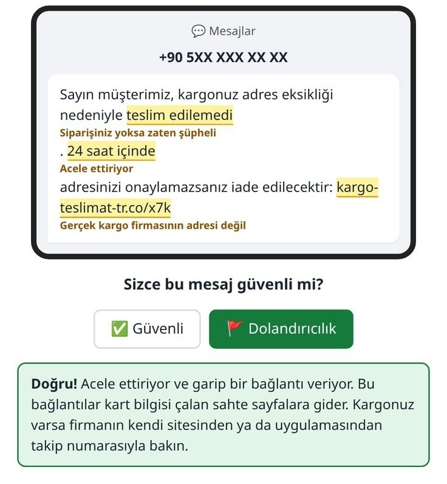
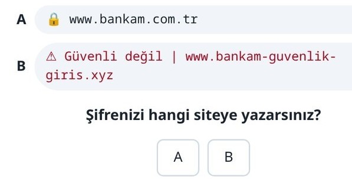
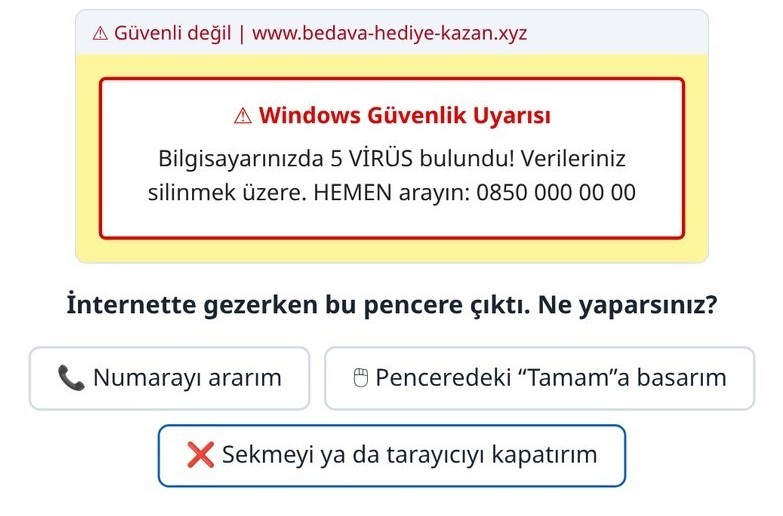
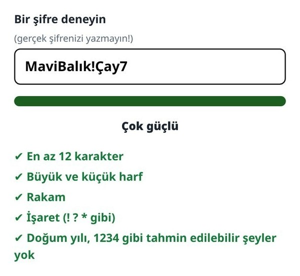

Ek ders: İnternette güvenlik
Alıştırmalar ve oyunlar
Bu ders
Dolandırıcıların mesajlarında hep aynı işaretler vardır. Alıştırmada her örneğe “güvenli mi, dolandırıcılık mı?” diye karar verilir.
Oyun · Kargo mesajı
Cevap: dolandırıcılık. Kargonuz varsa firmanın kendi sitesinden ya da uygulamasından takip numarasıyla bakın.

Oyun · Sekiz örnek
| Kargo mesajı | dolandırıcılık Acele ettiriyor, garip bağlantı |
|---|---|
| Banka: “hesabınız bloke” | dolandırıcılık Banka SMS ile şifre ya da kart bilgisi asla istemez |
| Doğrulama kodu (siz giriş yaptınız) | güvenli Ama kodu kimseyle paylaşmayın |
| Telefonda “banka güvenlik birimi” | dolandırıcılık Gelen kodu isteyen her arama; kapatın, bankayı kendiniz arayın |
| “Babaanne, yeni numaram, 5.000 TL lazım” | dolandırıcılık Eski numarasından arayıp doğrulayın |
| Fatura e-postası (bağlantı, acele yok) | güvenli Yine de tutarı bankanızdan kontrol edin |
Oyun · Sahte site, sahte uyarı


Alıştırma
Her yerde aynı şifreyi kullanmayın. Gerçek şifrenizi alıştırmada yazmayın.

Özet
| Acele ettiren, korkutan mesaj | Durun, düşünün, kimseye hemen bilgi vermeyin |
|---|---|
| Şifre, kart bilgisi, SMS kodu | Banka ve devlet kurumları telefonla ya da SMS ile asla istemez |
| Garip bağlantılar | Tıklamayın; siteyi kendiniz açın |
| “Acil para lazım” diyen yakın | Önce bildiğiniz eski numarasından arayıp doğrulayın |
| Sahte virüs uyarısı | Numarayı aramayın; sekmeyi ya da tarayıcıyı kapatın |
| Emin değilseniz | Bir yakınınıza danışın |